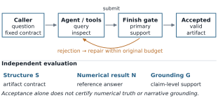
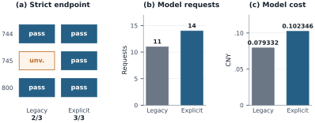
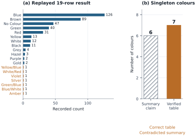

Join duplication
A decline that disappears at the right grain.
90.0% → 90.0%
Distinct-order rate stays flat while joined-row rate falls from 90.0% to 69.2%. Check entity grain before interpreting the dashboard.
Open-source research toolkit Alpha
Investigate a metric change with inspectable SQL, visible errors and replayable evidence.
Follow the path from a question to its data. Give the answer a caller-defined shape. Keep the supporting evidence—and the failures that led to it.
Python 3.11+ · Standard-library runtime · Apache-2.0
Offline recorded responses · No model calls
no such column: reporting_weekrun_id · period_key · variant · outcomeCorrected query uses period_key.
| period_key | passed_runs | eligible_runs |
|---|---|---|
| after | 3 | 6 |
| before | 5 | 6 |
Actual tool results; fixed, hand-authored choices. Inspect the generated report →
The problem
A query can run successfully and still use the wrong grain, return the wrong shape, or support an inaccurate explanation. An agent’s final sentence hides those distinctions.
This toolkit makes the investigation inspectable: bounded tools, retained feedback, an explicit answer artifact and a replayable record. It starts with synthetic CSV bundles or explicitly admitted public snapshots.
01 / Method
The provider proposes actions. The runtime validates and executes them. Actual results and errors become the next turn’s observations.
Goal, bundle, limits and optional caller-owned answer contract.
Context, schema, read-only SQL, fixed analysis and plots.
Return real feedback. Keep rejected attempts within the original budget.
Name the answer and its supports. Export report, trace, notebook and replay.
Steps 2–3 repeat within fixed limits. A rejected finish in the terminal finish-only phase ends the run.
Before the first provider request, the runtime copies a contract for column names and order, value types, nullability and row bounds. The model cannot replace it. The contract contains no expected values or reference SQL.
For an answered or conditional finish, the provider selects one successful, untruncated query as the answer. Supporting context, queries, analysis and plots remain separate.
Read the full contract →Example · frozen before the run
{
"version": 1,
"columns": [{
"name": "publisher_id",
"type": "integer",
"nullable": false
}],
"min_rows": 1,
"max_rows": 1
}A correct identifier plus an extra name column fails this shape. A wrong integer can still pass it.
The runtime checks source, type and shape. Replay checks recorded computations and integrity relative to the supplied manifest. Neither establishes metric authority, causality or the truth of every sentence.

These are elementary conditional interface properties, not new algorithms or formal verification of the software. Read the assumptions and proofs in the 11-page research draft →
02 / See the software
A short capture of the current CLI and its generated report. Real SQL and replay; hand-authored provider responses on original synthetic data.
The simulation example preserves e004’s SQL error, schema inspection at e005 and the corrected answer at e006. The measured pass rate changes from 5/6 to 3/6. This is descriptive arithmetic.
03 / Concrete cases
Included synthetic fixtures with fixed offline drivers. These illustrate workflow behavior, not model accuracy.
Join duplication
90.0% → 90.0%
Distinct-order rate stays flat while joined-row rate falls from 90.0% to 69.2%. Check entity grain before interpreting the dashboard.
Delivery delay
90.0% → 60.0%
The order-level decline remains. North falls from 90.0% to 30.0%; localization describes where, without establishing why.
Missing definition
needs_clarification
Time basis and cancelled-order policy are unresolved. The workflow retains concrete questions and an incomplete status.
Fixture arithmetic, source files and reproduction instructions →
04 / Observed evidence
Three prospective question families from an adapted BIRD Mini-Dev database. One trial per mode per family, on the same build and one model configuration.
Families passing all declared checks, out of 3
Both modes answered all three substantive questions correctly. The difference was one answer-shape repair, not an arithmetic gain.
Totals across the same three families per mode
Recorded usage estimates: CNY 0.079332 legacy; CNY 0.102346 roles + contract. Not invoices or current price quotes.
The contract required publisher_id alone. Both modes initially returned the correct ID with an extra name column. Explicit mode received answer_columns_mismatch and repaired the shape within the same trial. Legacy’s selected artifact remained structurally ineligible; its answer was unverifiable under that rule, not numerically wrong.
The related sign diagnostic (two trials) and exposed smoke (one trial) are separate from the prospective comparison. These small observations establish no statistical superiority or broad model advantage. Review was AI-assisted, not independent human review; raw live traces and reference data are not bundled.


Derived observations from BIRD-SQL Mini-Dev, BIRD Team, under CC BY-SA 4.0. Data attribution · Figure data · Reproduce the figures
Source: frozen live evaluation · Evaluated runtime a18a070 · 11-page research draft · Paper source · Font notices
05 / Replay & audit
The export preserves the inputs, tool choices, returns, errors and completion state. A standalone replay checks the captured calculations against copied inputs without making model calls.
Architecture & trust boundaries →The host and transport are trusted code, not an arbitrary-code sandbox. Passing a contract does not verify numerical values, support relevance, metric authority or prose. A live provider requires explicit data-sharing consent and caller-owned credentials, timeouts and spending controls. Offline demos cannot adapt their fixed choices to a new question.
The project is alpha. Linux is the verified platform; CI covers Python 3.11 and 3.12. There is no package-index release, claim of conference acceptance or claim of external adoption.
06 / Try it locally
No model account or API key needed. This quickstart runs the SCRIPTED MOCK join example with a deliberate SQL error.
Open runs/join-demo/report.html, then expand the evidence steps. Use a new output path for every run.
Python 3.11+ on Linux. Installation may download build tooling; runtime demonstrations make no model calls.
git clone https://github.com/CamusFSY/workflow-data-investigator.git
cd workflow-data-investigator
python3 -m venv .venv
.venv/bin/python -m pip install ./data-investigation-agent
.venv/bin/data-investigator run \
--fixture data-investigation-agent/fixtures/join_multiplier \
--out runs/join-demo --inject-schema-error
.venv/bin/python runs/join-demo/replay.py